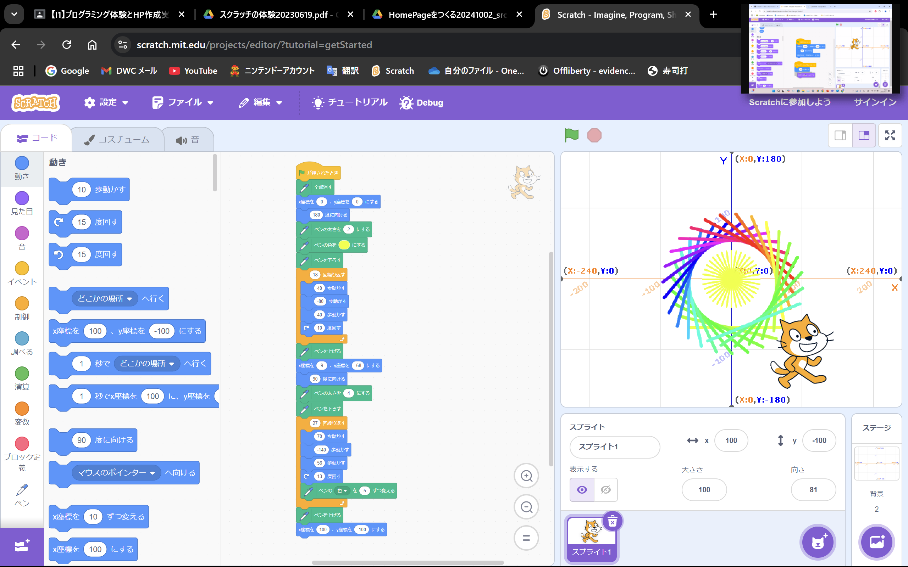
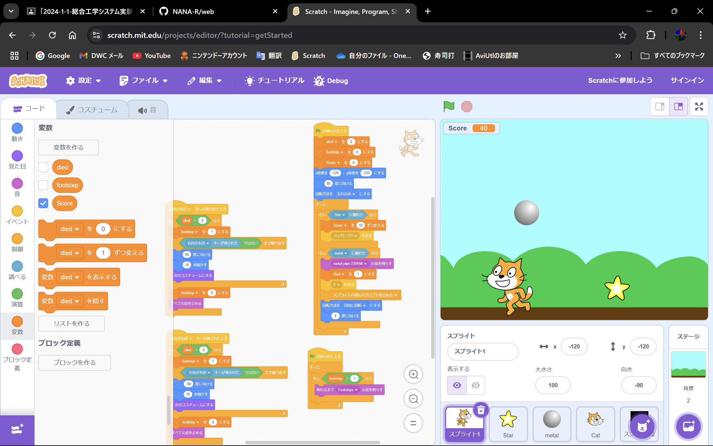

1週目のレポート ： 公大高専１年実習I-1
1b班34番 NANA_R
第1週目
1-1 サイエンスアート

1.内容
スクラッチを使って線を書くプログラムを作成した．
このプログラムは黄色い線を回転しながら，18本描いた後に，その周りを27本の線を色を変えて回転しながら，描くプログラミングである．
2.感想
お花のようなサイエンスアートを作成したかったので，以上のプログラムを作成したが，猫の角度によって虹色の円の位置が変化したので，
位置の調整が難しかった．円を綺麗に真ん中に配置するには，どうすればいいのか疑問に思った．
1-2 ゲーム

1.内容
スクラッチを使って，上から落ちてくる星を集めるゲームを作成した．
このゲームは上から落ちてくる星を左，右矢印キーで猫を移動させて集めるゲームである．
ゲームの難易度を少し上げるために，当たるとゲームオーバーになる鉄球を追加した．
また，猫が移動するときに足音をつけたが，そのまま音を鳴らすプログラムだと音が連続して鳴ってしまったため，
変数を使って音が連続にならないように工夫した．
2.感想
鉄球を追加する際に，他のスプライトを停止させるプログラムを作成することが難しかった．
変数ブロックがゲームを作成するときに，かなり役立つことを実感した．
1-3 ホームページ作成
私のホームページ
1.内容
githubを用いてホームページを作成した．もともと公開されているテンプレートをフォークし，コードの内容を変更したり，
画像をアップロードに加えたりして，オリジナルのホームページになるように仕上げた． 2.感想
実習当日では，ホームページ作成以降の変更がすべて適応されなっかたので，不安に思ったが，後日に再読み込みすると
変更が適応されたので，安心した．また，今日見ているホームページの数々もこのようなコードの集まりで構成されていることを実感した．
各ページへのリンク
1週目のレポート
2週目のレポート
3週目のレポート
私のホームページ